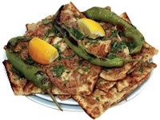

KONYA YEMEKLERİ

ETLİEKMEK:
Güzel Konyamız ile özdeşleşmiş yöresel yemeklerden en meşhuru etli ekmektir. Etliekmek denince Konya akla gelir ve etliekmek burada yenir. Bu yüzden Konya'ya uğrayan herkes bir kez olsun mutlaka yer. Bir kişinin Konyalı olup olmadığını "etliekmek" deyişinden anlayabilirsiniz. Çünkü Konyalılar genelde hızlıca ' i ' siz : "Etlekmek" derler.
Etliekmekte etin güzel olması ve hamurun ince olması makbuldür. Eskiden et hiçbir zaman makinede çekilmezdi. Tahta tezgâhlarda bir çift bıçakla kıyılırdı. Etin içine biber, domates, maydanoz ve istenirse soğan doğranır. Normal etliekmeklerde 60 gr kıyma, 100 gr sebze (soğan, domates, biber) kullanılır. Bu karışım mahalledeki fırına götürülür. Burada fırıncının mahareti ile mayalı hamurlar fırın küreği üzerinde elle ince ve uzun olarak açılır. İç konur ve üstü açık olarak pişirilir.
Günümüzde et, makinede çekilmektedir. Et, elde iki bıçak arasında doğranarak bu ekmek hazırlanırsa buna bıçak arası, et ve peynir karışık olarak yapılırsa bu çeşidine de Mevlânâ denilmektedir. Bu ekmeğin sadece peynirlisi de yapılmaktadır. Bazen ıspanaklar evde hazırlanarak, fırınlara götürülüp açık veya kapalı pişirilmesi sağlanmaktadır. Konyalı aileler, özellikle hafta sonları bu börekleri yaptırmakta ve aile bireyleri bir araya gelerek hep birlikte yenmektedir. Konya’da sadece etliekmek üzerine ünlenmiş lokanta ve restorantlar bulunmaktadır.
Etliekmek Tarifi:
(1 kişilik)
Gerekli malzemeler:
2 soğan
2 domates
2 sivribiber
Yarım demet maydanoz
250 gr. bıçakarası et
Yarım ekmek hamuru
Tuz, karabiber
YAPILIŞI:
Soğan, domates ve biberleri küçük küçük doğrayın. Maydanozu ince ince kıyın. Doğranmış malzemeleri et ile karıştırıp tuz ve karabiber ekleyin.
Ekmek hamurunu pide şeklinde açın. Hazırladığınız harcı hamurun üzerine yayın. 180 derece fırında 20 dakika pişirin. Sıcak servis yapın.
Etliekmek Tarifi:
(1 kişilik)
Gerekli malzemeler:
2 soğan
2 domates
2 sivribiber
Yarım demet maydanoz
250 gr. bıçakarası et
Yarım ekmek hamuru
Tuz, karabiber
YAPILIŞI:
Soğan, domates ve biberleri küçük küçük doğrayın. Maydanozu ince ince kıyın. Doğranmış malzemeleri et ile karıştırıp tuz ve karabiber ekleyin. Ekmek hamurunu pide şeklinde açın. Hazırladığınız harcı hamurun üzerine yayın. 180 derece fırında 20 dakika pişirin. Sıcak servis yapın.SAÇ BÖREĞİ:
Malzemeler:
Yeteri kadar un
Tereyağı
Peynir
Ispanak
YAPILIŞI:
Yeteri kadar hamur yoğrulur. Yapılacak içler hazırlanır. Hamur bezeler şeklinde hazırlanır. Hazırlanan bu bezeler yufka gibi açılır. İçine yapılacak olan (peynir veya ıspanak) konur ve saç ocağında pek gevrek olmamak şartıyla yiyecek olanın dişine göre pişirilir. Pişirilen bu börek yine yiyecek olanın kapasitesine göre yağlanır ve afiyetle yenir.MEVLANA BÖREĞİ:
Malzemeler:
1 çay bardağı yoğurt
1 çay bardağı zeytinyağı
Biraz su
Yarım limon suyu
Biraz Tuz Alabildiği kadar un
(Ayrıca içi içir yarım kilo kadar zeytinyağı ile karışmış tereyağ)
YAPILIŞI:
Bu malzemelerin hepsi konur ve güzelce yoğrulur. Küçük küçük bezeler ayrılır. Dinlenmeye bırakılır. Diğer tarafından bir iki baş soğan yarım kilo kıyma, 1 demet maydanoz, biraz karabiber. Soğanlar bir iki kaşık zeytinyağında kavrulur. Sonra kıyma da ilave edilerek kavrulur. Ateşten indikten sonra maydonozu ilave edilir. Diğer taraftan bezeler incecik açılır. Arası yağlanır tekrar açılır tekrar yağlanır. Ve bir bohça şeklinde dürülerek köşelere iç konulur ve kapatılır. Ondan sonra sıcak fırına sürülür.AARABAŞI ÇORBASI:
Malzemeler:
Bir miktar su,
Bir miktar un
1 tane horoz
1 kaşık karabiber
1 paket yağ
1 tane limon
YAPILIŞI:
ÇORBA YAPILIŞI: Bir miktar un, bol yağda kırmızılaşıncaya kadar kadar kavrulur.Daha önce pişmiş olan horoz kavrulmuş olan unun üzerine ince ince didilerek konur.Bir miktar tavuk suyu eklenir. 20 dakika kaynadıktan sonra limon ve karabiber ilave edilir. Daha sonra hamuru ile birlikte servis yapılır.
ARABAŞI HAMURU: Tencereye normal bir şekilde su konarak iyice kaynatılır.Kaynayan suyun içine azar azar un konarak tahta kaşık ile karıştırılır. Belli bir kıvama gelince un konulmadan hamur karıştırılarak iyice pişirilir.Daha sonra hamurun kolay dağılması için tepsi su ile ıslatılarak hamur tepsiye dökülerek soğutulur. Daha sonra çorba ile servis yapılır. Mide ve barsak tembelliğine çok iyi gelir. Kış aylarında sıkça yapılır.
DİLBER DUDAĞI BAKLAVASI:
Malzemeler:
1 yumurta
1 yemek kaşığı yoğurt
1 çay bardağı zeytinyağı
1/2 kg süt
1 tatlı kaşığı tuz
ceviz içi
Belli bir ölçüde un
YAPILIŞI:
ılık sütün içine zeytinyağını, tuzu, yoğurdu, yumurtayı döküp karıştıracak. Daha sonra bunun içine un ilave edilir. Daha sonra elde edilen hamurdan 20 beze yapılarak açılır. Bundan sonra bezeler tepsinin içine konulup yuvarlak biçimlerde kesilir. Bunlar içine ceviz konarak fırın tepsisine yerleştirilir. Tepsinin dolmasından sonra tereyağı kızartılarak üzerine serpilir. Sonra fırına konularak kızartılır.ETLİ PİLAV:
Malzemeler:
Nohut
Et suyu
500 gr. Et
Tuz-Karabiber
Pirinç,
Kişniş
1 margarin
YAPILIŞI:
Pirinç güzelce yıkanır. Öbür tarafta et suyu kaynar. Nohut haşlanır. Tavaya yağ konur. Eridikten sonra pirinç içine atılır. Hafif ateşte bekletildikten sonra üzerine suyu dökülür. Pişmeye bırakılır. Piştikten sonra üzerine kebap şeklinde et dökülür. Servis yapılır.BATIRIK:
Malzemeler:
Düğürcük
tahin (veya ceviz, menengiç, v.s.)
soğan
domates
taze biber
maydanoz
7 türlü baharat
tuz
sumak
salça
biber salçası.
YAPILIŞI:
Düğürcük büyükçe tepsi veya sini üzerine dökülür. Rendelenmiş domates, salça, biber salçası, soğan, ince kıyılmış biber ve maydanoz, kızartılmış tahin, ve baharat ilave edilerek ovulur. Düğürcük yumuşayıp dişe dokunmayacak hale gelinceye kadar ovma işlemi devam eder. Daha sonra küçük sıkmalar haline getirilir. Rendelenmiş ve sumaklanmış soğan, domates, salatalık ve turşu ile yenir. Ayrıca sulandırılarak da yenir. Cevizli, menengiçli, susamlı, fıstıklı şekilleride yapılabilir. Besin değeri çok yüksektir.ETLİ FIRIN YEMEĞİ:
MALZEMESİ:
1 kg bıçak arası yağsız sığır eti
Orta-boy dört baş soğan
5-6 diş sarımsak
tuz
biber
1-1,5 su bardağı su
1 kg un
1 sana yağı
1 ad. büyük patates
YAPILIŞI:
Et tencereye konur,soğanlar doğranarak tencereye ilave edilir. Tuz ilave edilir. Bir kaşık margarin katılır. Et suyunu çekene kadar tencerenin kapağı kapanarak pişirilir. Patates rendelenir,sarımsaklar ezilir ve tencereye ilave edilir. Patates ezilene kadar kaynatılır. Söndürdükten sonra isteğe göre karabiber ilave edilir. HAMURU: Undan yumuşak hamur yoğrulur ve iki eşit parçaya bölünür. Bölünen hamurlar oklava yla ayrı ayrı açılır ve eritilmiş sana yağı üzerinde gezdirilir. Açılan ve yağlanmış olan hamurlar katmer şeklinde kıvrılır. Daha sonra katmer haline getirilmiş hamur parçalarından biri alınarak fırın tepsisine serilir. Daha önce hazırlanmış olan et ,tepsinin üzerine örtülür. Bundan sonra iki hamur parçasının kenarları birbirine iyice yapıştırılır. Kızgın fırına sürülerek kızarıncaya kadar bekletilir. Kızardıktan sonra servis yapılır.KAYGANA TATLISI:
MALZEMESİ:
5 yumurta
1 kilo süt
Kabartma tozu
Un
tuz